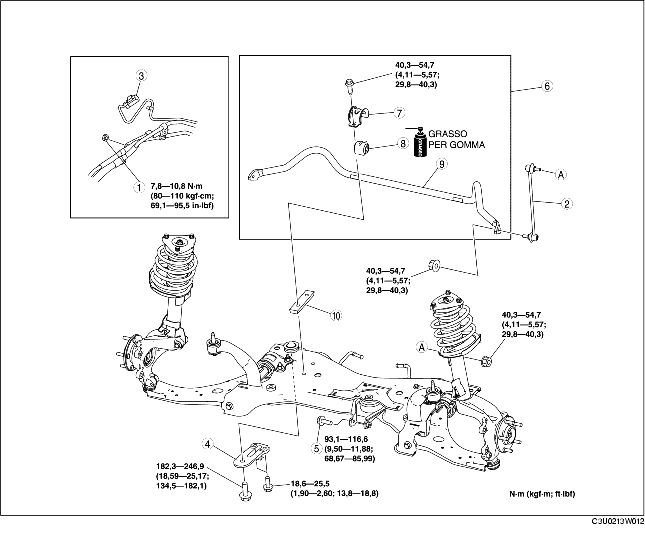

1. Staccare l'albero dello sterzo. (Vedere RIMOZIONE/INSTALLAZIONE VOLANTE E PIANTONE).
2. Rimuovere nell'ordine indicato in tabella.
3. Installare in ordine inverso rispetto alla rimozione.
4. Controllare l'allineamento delle ruote e regolarlo secondo necessità. (Vedere ALLINEAMENTO RUOTE ANTERIORI).

.
1. Sostenere la traversa anteriore con un martinetto.
2. Rimuovere le staffe della traversa anteriore.
1. Staccare i supporti del silenziatore sul tubo intermedio dalla traversa anteriore.
2. Abbassare lentamente la traversa anteriore di circa 90 mm (3,5 in) e rimuovere il gruppo barra stabilizzatrice anteriore.
1. Fissare la flangia della staffa barra stabilizzatrice usando una morsa.
2. Rimuovere la barra stabilizzatrice anteriore.
1. Verificare la direzione di installazione della boccola della barra stabilizzatrice.
2. Ampliare l'apertura della boccola della barra stabilizzatrice a 16-26 mm (0,7-1,0 in) e installare la boccola sulla barra stabilizzatrice anteriore come mostrato in figura.
1. Ingrassare la boccola della barra stabilizzatrice.
2. Installare la staffa barra stabilizzatrice usando una morsa.
1. Serrare i bulloni nell'ordine indicato in figura.